Generated 2026-05-05. Data from 1,421 verified facts.
Commissioner attendance at specific institutions across administrations.
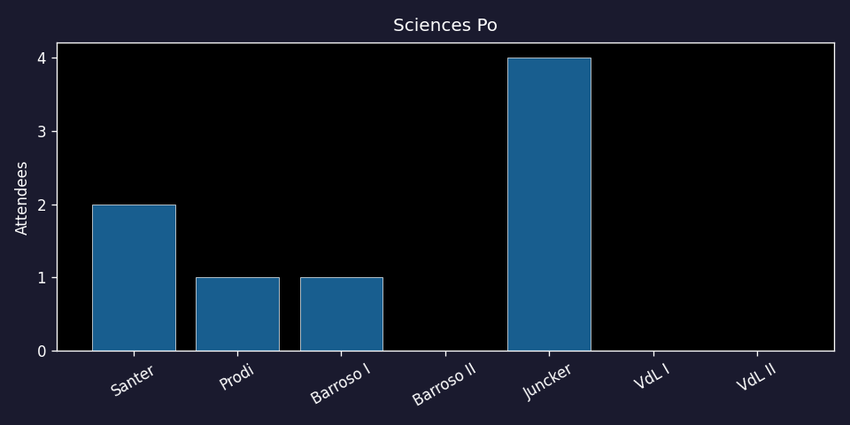
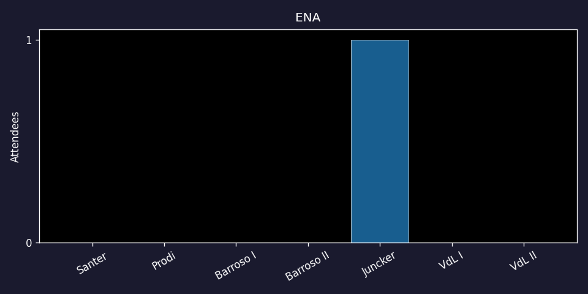
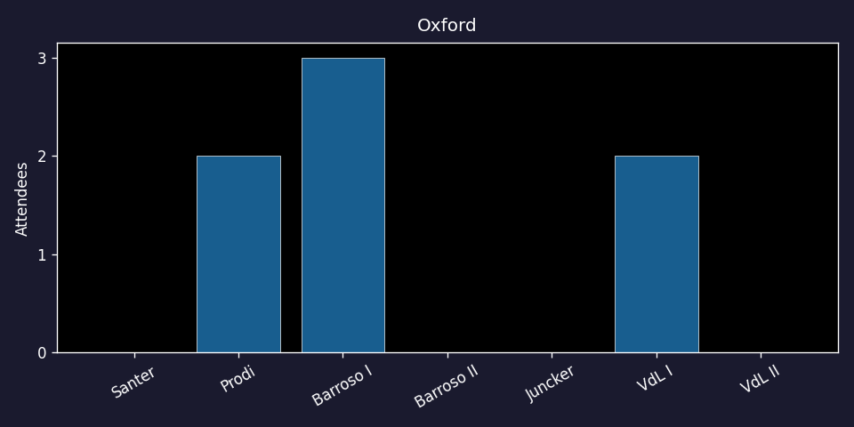
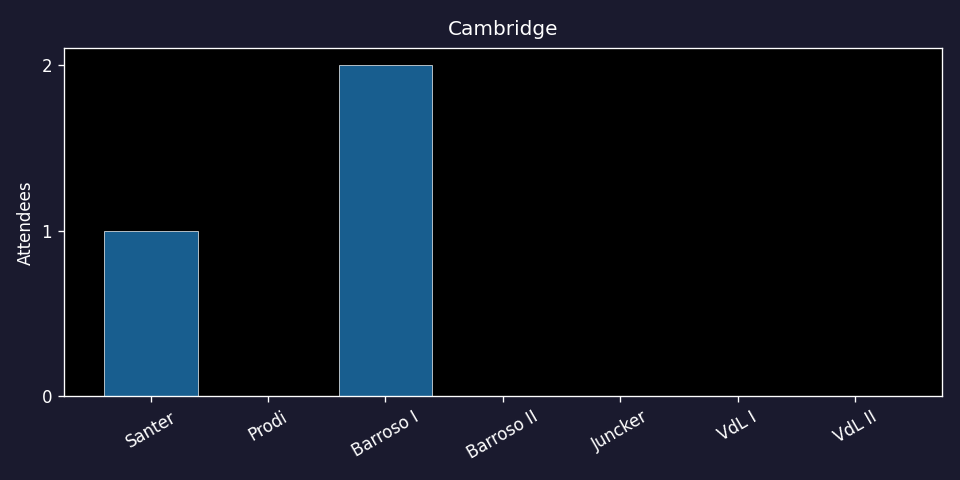
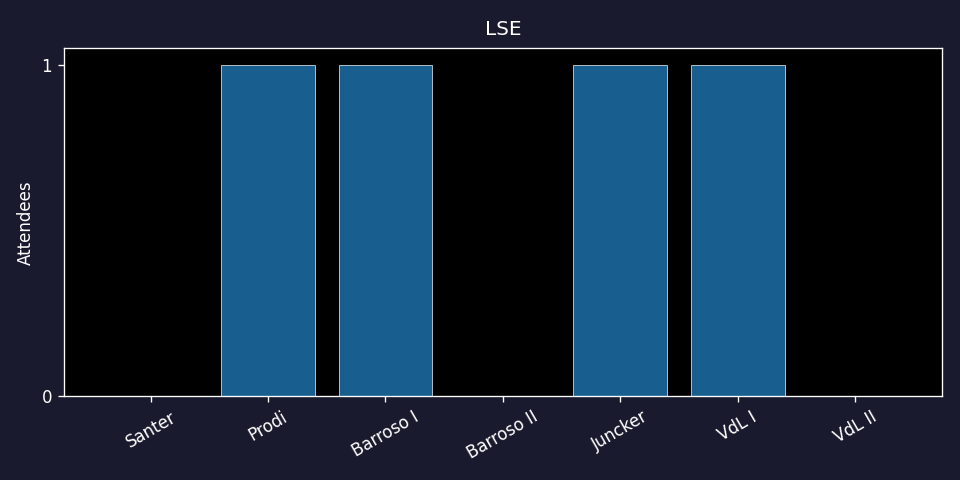
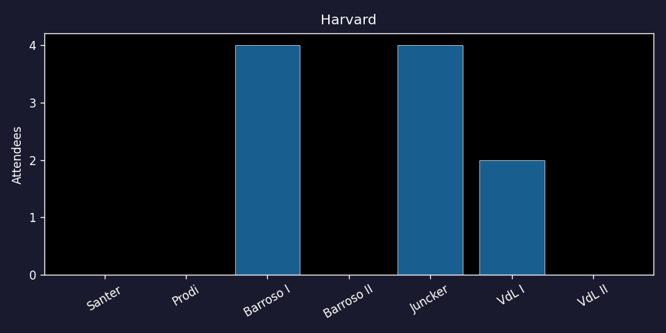
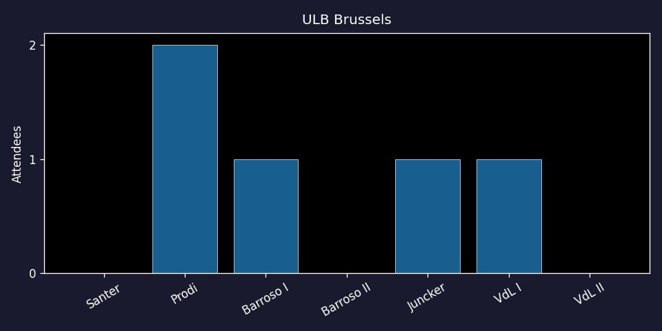
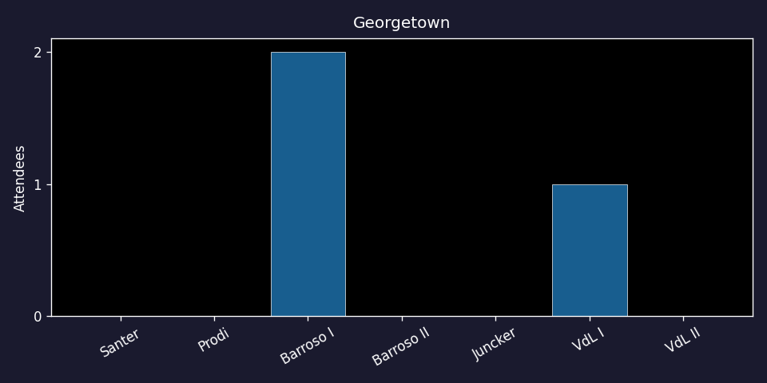
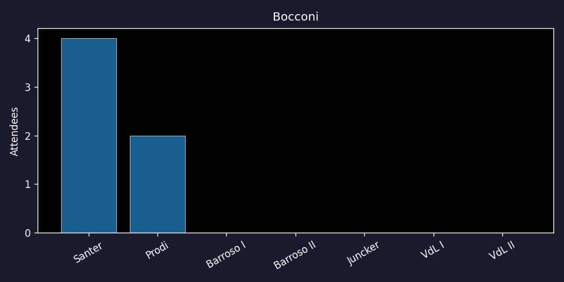
Commissioner memberships in specific organisations across administrations.
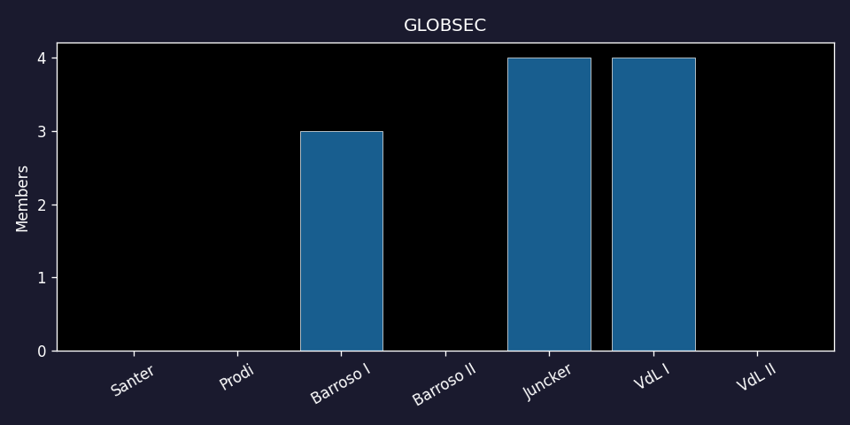
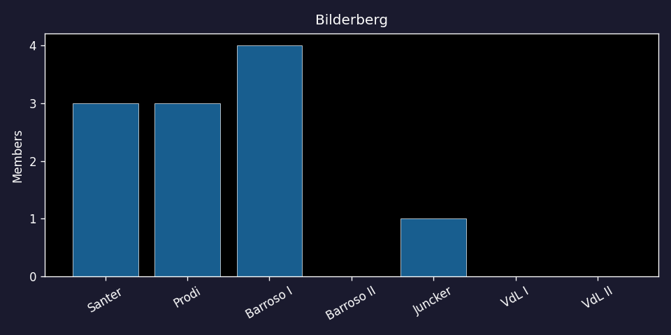
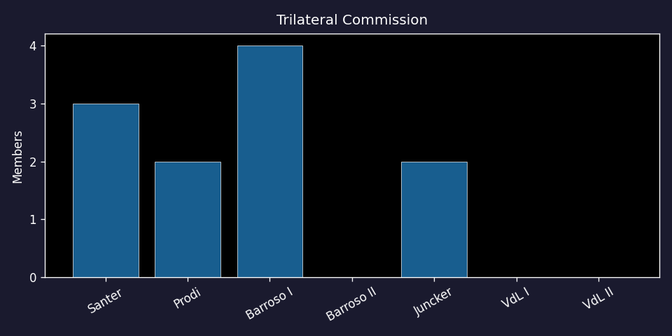
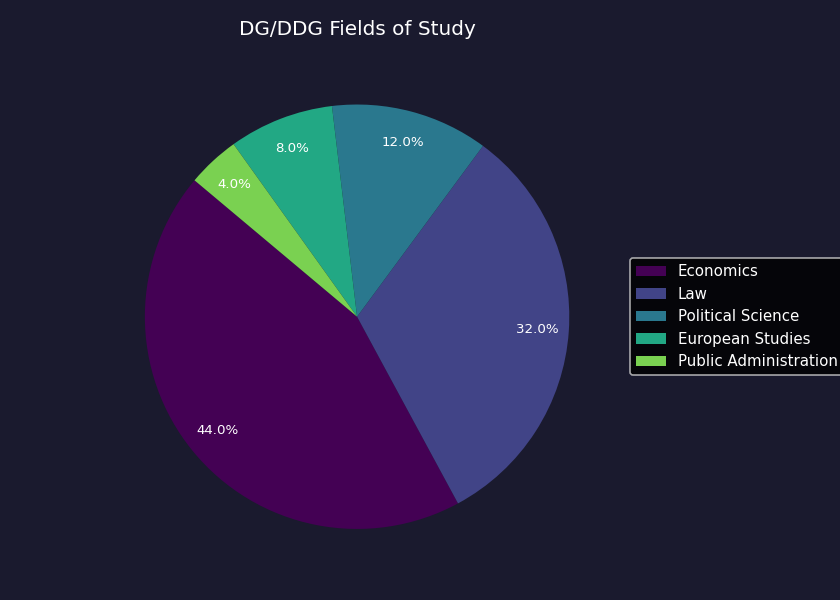